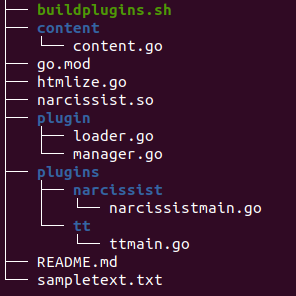

Several years ago I started writing a series of posts on plugins: how they are designed and implemented in various systems and programming languages. In this, I'll extend the series by providing some examples of plugins in Go.
As a reminder, the original post in this series identifies four fundamental plugin concepts, and claims that nearly all plugin systems can be characterized and understood by mapping their design to these concepts:
- Discovery
- Registration
- Application hooks to which plugins attach (aka. "mount points")
- Exposing application capabilities back to plugins (aka. extension API)
Two kinds of plugins
As in other statically compiled programming languages, in Go it's common to talk about two general kinds of plugins: compile-time plugins and run-time plugins. We'll cover both kinds here.
Compile-time plugins
Compile-time plugins consist of code packages that get compiled into the application's main binary. Once the binary is built, its functionality is fixed.
The best known example of a compile-time plugin system in Go is drivers for the database/sql package. I've written a whole post about this topic - please read it!
To briefly recap: database drivers are packages that the main application imports using a blank import _ "name". These packages then use their init functions to register with the database/sql package using sql.Register.
W.r.t. the fundamental plugin concepts, here is how compile-time plugins (and database/sql as a concrete example) fare:
- Discovery: very explicit, with an import of a plugin package. Plugins can then perform registration automatically in their init function.
- Registration: since the plugin is compiled into the main application, it's straightforward for it to invoke a registration function (e.g. sql.Register) directly from the plugin.
- Application hooks: Typically, a plugin will implement an interface the application provides and the registration process will hook up the interface implementation. With database/sql, a plugin will implement the driver.Driver interface and a value implementing this interface will be registered using sql.Register.
- Exposing application capabilities back to plugins: with compile-time plugins this is simple; since the plugin is compiled into the binary, it can just import utility packages from the main application and use these in its code as needed.
Run-time plugins
Run-time plugins consist of code that does not get compiled into the original binary of the main application; instead, it hooks up to this application at run-time. In compiled languages, a common tool to achieve this goal is shared libraries, and Go supports this approach as well. The rest of this section will provide an example of developing a plugin system in Go using shared libraries; alternative approaches will be examined a bit later.
Go comes with a plugin package built into the standard library. This package lets us write Go programs that get compiled into shared libraries instead of into executable binaries; further, it provides simple functions for loading shared libraries and getting symbols from them.
For this post, I've developed a complete example of a run-time plugin system; it replicates the original htmlize example from the post on plugin infrastructures, and its design is similar to the one in the followup post on Plugins in C. The example consists of a simplistic program to convert some markup language (like reStructuredText or Markdown) to HTML, with support for plugins that let us adjust the way certain markup elements are processed. The full sample code for this post is available here.
Let's examine this sample using the fundamental concepts of plugins.
Discovery and Registration: accomplished via file system lookup. The main application has a plugin package with the LoadPlugins function. This function scans a given directory for files ending with .so and treats all such files as plugins. It expects to find a global function named InitPlugin in each shared library, and invokes it providing it a PluginManager (more on which later).
How did the plugins become .so files in the first place? By building them with the -buildmode=plugin flag. Look at the buildplugins.sh script and the README file in the code sample for more details.
Application hooks: now is a good time to describe the PluginManager type. This is the main type used for communicating between plugins and the main application. The flow is as follows:
- The application creates a new PluginManager in LoadPlugins, and passes it to all the plugins it finds.
- Each plugin uses the PluginManager to register its own handlers for various hooks.
- LoadPlugins returns the PluginManager to the main application after all plugins have registered with it.
- When the application runs, it uses PluginManager to invoke plugin-registered hooks as needed.
As an example, PluginManager has this method:
func (pm *PluginManager) RegisterRoleHook(rolename string, hook RoleHook)
Where RoleHook is a function type:
// RoleHook takes the role contents, DB and Post and returns the text this role
// should be replaced with.
type RoleHook func(string, *content.DB, *content.Post) string
Plugins can invoke RegisterRoleHook to register a handler for a specific text role. Note that this design doesn't actually use Go interfaces, but alternative designs could do that; it all depends on the specifics of the application.
Exposing application capabilities back to plugins: as you can see in the RoleHook type above, the application passes data objects to the plugin for its use. content.DB provides access to the application database, and content.Post provides the specific post the plugin is currently formatting. The plugin can use these objects to obtain data or behavior from the application, as needed.
Alternative approaches to run-time plugins
Given that the plugin package was only added to Go in version 1.8 and the limitation described previously, it's not surprising that the Go ecosystem saw the emergence of alternative plugin approaches.
One of the most interesting directions, IMHO, involves plugins via RPC. I've always been a fan of decoupling an application into separate processes communicating via RPC or just TCP on localhost (I guess they call this microservices these days), since it has several important upsides:
- Isolation: crash in a plugin does not bring the whole application down.
- Interoperability between languages: if RPC is the interface, do you care what language the plugin is written in?
- Distribution: if plugins interface via the network, we can easily distribute them to run on different machines for gains in performance, reliability, and so on.
Moreover, Go makes this particularly easy by having a fairly capable RPC package right in the standard library: net/rpc.
One of the most widely used RPC-based plugin systems is hashicorp/go-plugin. Hashicorp is well known for creating great Go software, and apparently they use go-plugin for many of their systems, so it's battle-tested (though its documentation could be better!)
go-plugin runs on top of net/rpc but also supports gRPC. Advanced RPC protocols like gRPC are well suitable for plugins because they include versioning out-of-the-box, tackling the difficult interoperability problem between different versions of plugins vs. the main application.
Update (2023-03-28): here's a post about using go-plugin to implement the same functionality.